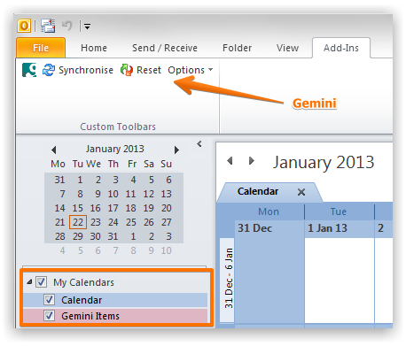
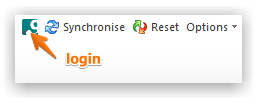
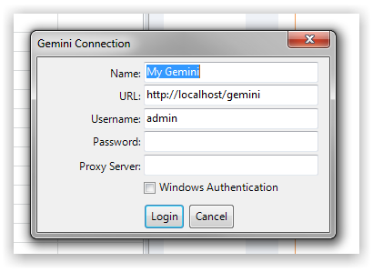
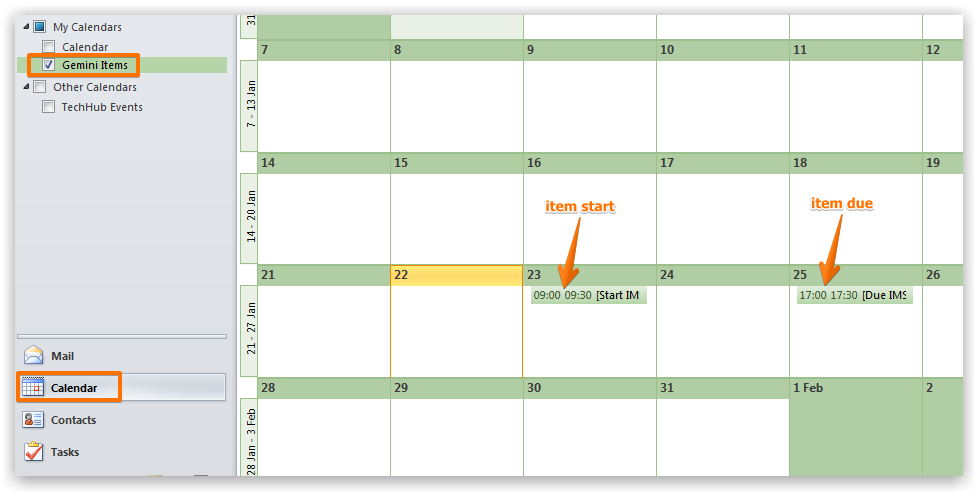
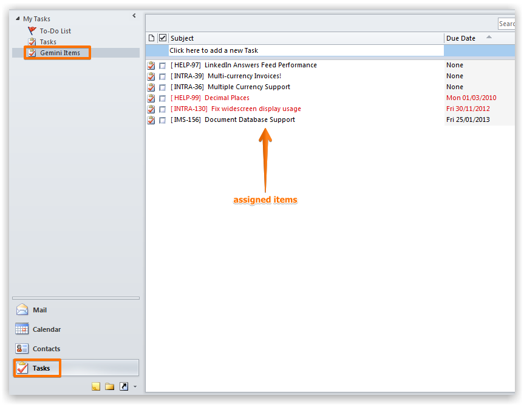
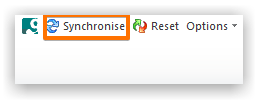

The Microsoft Outlook connector enables you to see your items in both Calendar and Task views.
After downloading and installing the connector you should see the Gemini toolbar within Microsoft Outlook.

Click on the login button to login.

Provide your Gemini credentials.

The Calendar view shows all items assigned to you that have start and/or due dates. Ensure you select the "Gemini" calendar.

NoteYou can drag-drop to change start or due dates for items (subject to your permissions)
The Taks pane shows all items assigned to you. Ensure you select the "Gemini" task list.

All changes must be synchronized back to Gemini. Click the Sync button to start the proces.

The changes will appear in Gemini after you synchronize.